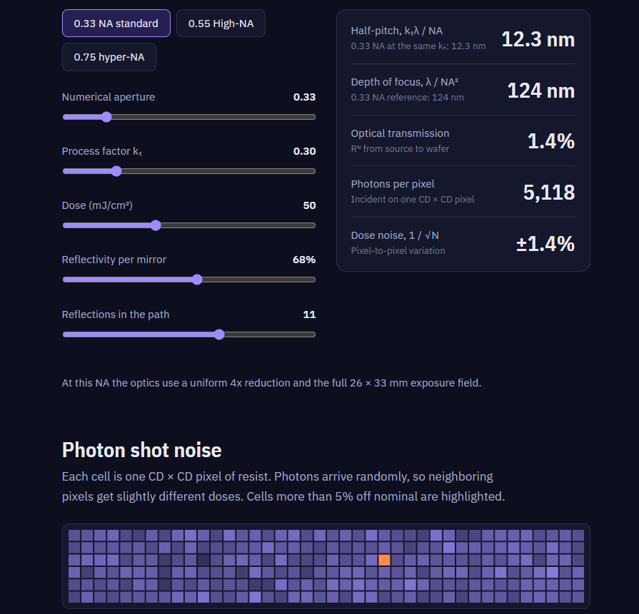
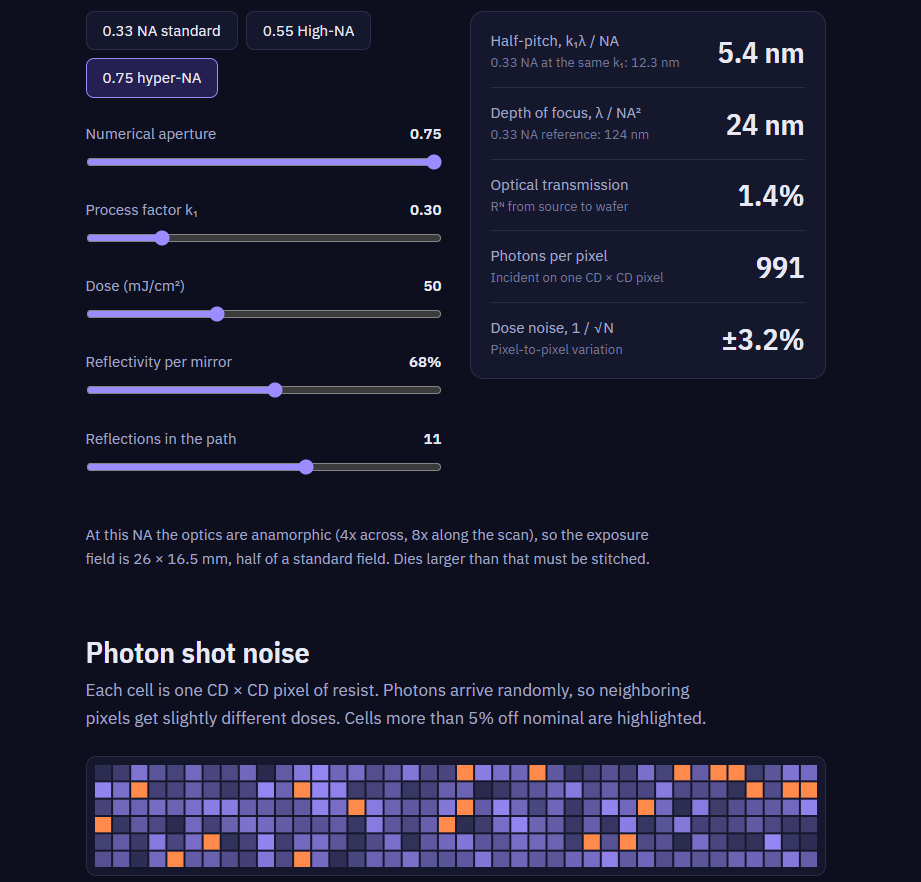

Inside a High-NA EUV scanner
What each step up in numerical aperture buys, what it costs, and a simulator you can use to see it for yourself.
Every leading-edge chip passes through a machine that fires lasers at tin droplets to make light that barely exists on Earth, bounces it off a series of near-perfect mirrors in vacuum, and prints features a few dozen atoms wide. This post walks through how a High-NA EUV scanner works and why the industry built one, with an interactive model you can use to change the physics and watch the tradeoffs appear.
Forty years of one equation
Optical lithography prints a chip layer by projecting a mask pattern onto a light-sensitive resist. How small it can print is set by the Rayleigh equation:
CD = k₁ · λ / NA
CD is the smallest printable half-pitch, λ is the wavelength of the light, and NA is the numerical aperture of the projection optics, a measure of the widest angle they can collect. The process factor k₁ captures everything else: the shape of the illumination, mask tricks, and resist chemistry. It has a physical floor of 0.25 for dense lines.
That leaves three ways to print smaller: shorten the wavelength, widen the optics, or push k₁ down. The history of lithography is those levers being pulled in turn. Mercury lamps at 436 and 365 nm gave way to KrF excimer lasers at 248 nm in the 1990s and ArF lasers at 193 nm in the 2000s. When the next wavelength step stalled, immersion lithography put a film of water between the lens and the wafer, pushing NA past 1.0 to 1.35.
For more than a decade after that, the wavelength stayed at 193 nm and scaling came from multi-patterning, which splits one critical layer into two to four patterning steps. EUV broke the stalemate in 2019 with 13.5 nm light, a 14× jump. But almost nothing transmits EUV, so the lenses had to become mirrors in vacuum, and NA restarted at 0.33. High-NA EUV resumes the climb at 0.55.
λ / NA is the part of the Rayleigh equation set by the scanner. Smaller means finer patterns.
| Generation | Wavelength | NA | λ / NA | Relative size |
|---|---|---|---|---|
| g-line | 436 nm | ~0.5 | ~870 nm | |
| i-line | 365 nm | ~0.65 | ~560 nm | |
| KrF | 248 nm | ~0.8 | ~310 nm | |
| ArF dry | 193 nm | 0.93 | 208 nm | |
| ArF immersion | 193 nm | 1.35 | 143 nm | |
| EUV | 13.5 nm | 0.33 | 41 nm | |
| High-NA EUV | 13.5 nm | 0.55 | 25 nm | |
| Hyper-NA EUV (under study) | 13.5 nm | 0.75 | 18 nm |
NA values for the older generations are approximate maxima.
Inside the machine
Light makes six stops between the source and the wafer. Select a stage in the diagram, or step through them in order.
Stage 1 of 6 in the light path
EUV source (laser-produced plasma)
How it works
Engineering challenge
Change the physics
Resolution comes with a second Rayleigh equation, for depth of focus, and with a photon budget. The simulator ties them together. Pick an NA preset or drag the sliders, and every number updates.
The Rayleigh equations
- CD
- Critical dimension, the smallest printable half-pitch
- k₁
- Process factor set by illumination, mask, and resist; the physical floor for dense lines is 0.25
- λ
- Wavelength of the exposing light, 13.5 nm for EUV
- NA
- Numerical aperture, n · sin θ, the widest angle the optics can collect (n = 1 in vacuum)
- DOF
- Depth of focus, how far the wafer can drift from best focus and still print
- k₂
- Focus factor, taken as 1 in this model
Photon shot noise
Each EUV photon carries about 92 eV, roughly 14 times more than a 193 nm photon, so the same dose delivers far fewer of them. Photons arrive randomly, and neighboring pixels of resist receive slightly different doses. In the grid below, each cell is one CD × CD pixel, and cells more than 5% off nominal dose are highlighted.
Three NA settings, side by side
These screenshots from the simulator keep the process fixed, with 13.5 nm light, k₁ = 0.30, and a 50 mJ/cm² dose, and change only the numerical aperture.



Three scaling laws explain the pattern. Resolution improves as 1/NA. Depth of focus shrinks as 1/NA², which forces thinner resists and tighter wafer leveling. And because each pixel’s area is CD², photons per pixel also fall as 1/NA², so shot noise grows in direct proportion to NA.
Holding noise at the 0.33 NA level would take about 2.8 times the dose at 0.55 NA, and 5.2 times at 0.75 NA. That is why source power and resist sensitivity matter as much as the optics. Optical transmission stays at 1.4% in all three screenshots because the model holds the mirror path constant to isolate the effect of NA.
Three experiments to try
Resolution costs focus
Moving from 0.33 to 0.55 NA shrinks the printable half-pitch by about 40% at the same k₁, but depth of focus shrinks with the square of NA.
Small features starve for photons
A smaller pixel catches fewer photons at the same dose, so random variation grows. Lower the dose to raise throughput and stochastic defects spread quickly.
Mirrors eat the light
Every reflection keeps only about two thirds of the light, and the losses multiply. A small drop in coating reflectivity or a couple of extra mirrors can halve the light that reaches the wafer.
Where High-NA stands
As of September 2026, High-NA is moving from development into production. At SEMICON Taiwan 2026, ASML said fleet availability had reached 84% in July, and it is targeting 90% by the end of the year, the level chipmakers need for volume manufacturing (Bits&Chips). Intel completed acceptance testing of its production EXE:5200B scanner in December 2025, ahead of planned 14A risk production (Bits&Chips). Hyper-NA at 0.75 remains a study: ASML has not formally committed to it and has pointed to around 2032 as a possible window (TrendForce).
How this model is simplified
- Photon counts are incident, not absorbed. Real resists absorb only part of the light, so real shot noise is worse than shown.
- Depth of focus uses k₂ = 1.
- The number of reflections is a free parameter, not a specific tool’s spec.
- The ±5% threshold is illustrative, not a real CD uniformity budget.
- The 0.75 NA case assumes the same half field as High-NA, since hyper-NA designs aren’t settled.
Figures are approximate values from published lithography physics, not vendor specifications. Feedback and corrections are welcome.